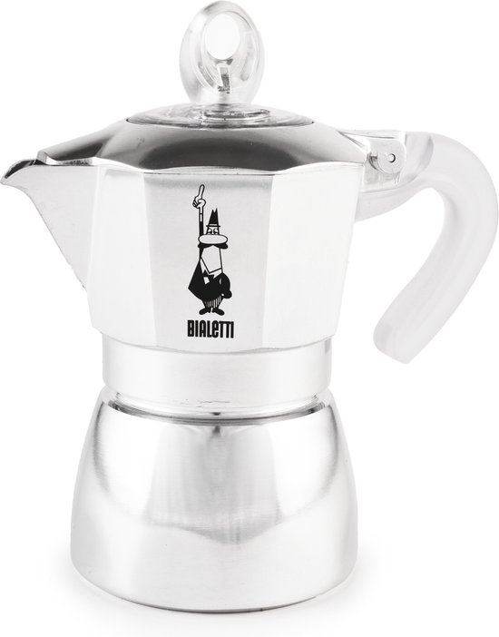
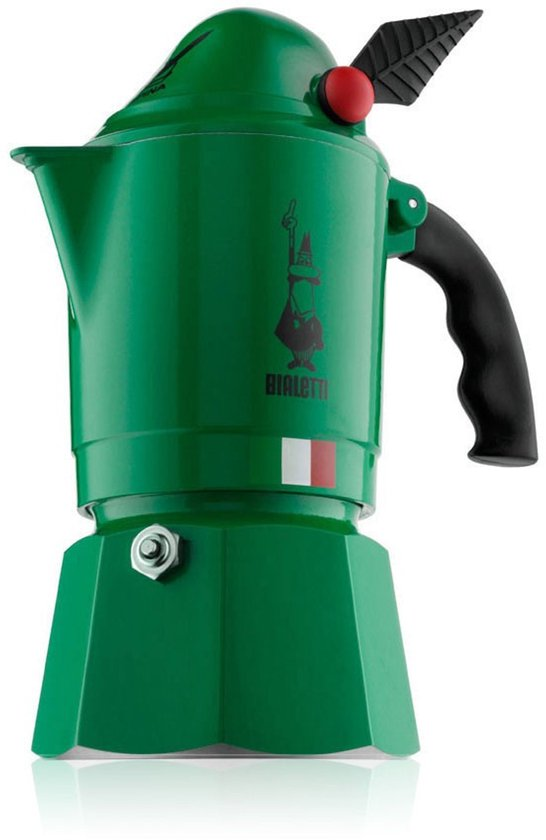
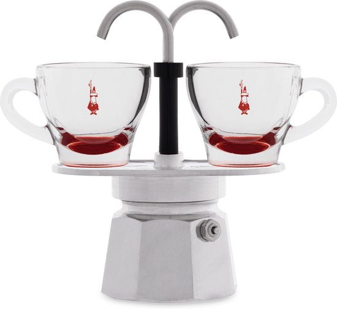
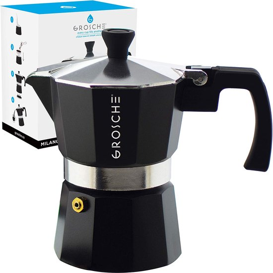

Pas le temps de parcourir tous les avis ? Voici nos 3 recommandations principales pour ceux qui veulent faire rapidement un choix fiable.

Bialetti Fiammetta
Parfait équilibre prix/qualité

Comparaison rapide des 10 modèles
Comparez toutes les caractéristiques en un coup d'œil. Cliquez sur un nom de modèle pour l'avis complet.
| Ranking | Model | Matériau | Induction | Capacité | Gamme de prix | Idéal pour | Rating | Actions |
|---|---|---|---|---|---|---|---|---|
| 1 | Bialetti Fiammetta 3c | Aluminium | 3 cups (150ml) | € | Débutants | Review | ||
| 2 | Bialetti Venus 4c | RVS | 4 cups (200ml) | €€ | Induction | Review | ||
| 3 | Bialetti Moka Express 3c | Aluminium | 3 cups (150ml) | € | Classique | Review | ||
| 4 | Bialetti Musa 6c | RVS | 6 cups (300ml) | €€ | Familles | Review | ||
| 5 | Bialetti Dama 3c | RVS | 3 cups (150ml) | €€ | Design | Review | ||
| 6 | Bialetti Alpina 2c | Aluminium | 2 cups (100ml) | € | Compact | Review | ||
| 7 | Alessi Pulcina 3c | Aluminium | 3 cups (150ml) | €€€ | Design | Review | ||
| 8 | Bialetti Mini Express 2c | Aluminium | 2 cups (100ml) | € | Usage solo | Review | ||
| 9 | Grosche Milano 6c | RVS | 6 cups (300ml) | €€ | Style moderne | Review | ||
| 10 | Bialetti Brikka 4c | Aluminium | 4 cups (200ml) | €€ | Couche crema | Review |
Bialetti Fiammetta 3c
Bialetti Moka Express 3c

Légende : € = €15-30 | €€ = €30-60 | €€€ = €60+ | c = tasses
Notre méthode de test
Chaque modèle passe par au moins 3 mois d'utilisation quotidienne intensive dans notre cuisine. Nous testons 50+ préparations par cafetière et évaluons sur 6 critères : goût du café (30%), qualité de construction (20%), facilité d'utilisation (15%), entretien (15%), durabilité (10%), rapport qualité-prix (10%).
Toutes les cafetières ont été achetées par nos soins. Nous ne recevons aucun paiement des marques. Lire notre méthode de test complète →
Avis détaillés
Parfait équilibre prix-qualité. Idéale pour un usage quotidien sur gaz, électrique ou vitrocéramique. Après 6 mois d'utilisation quotidienne, la Fiammetta reste notre favorite : café constant, design intemporel et qualité de construction premium.
Points forts
- Excellent rapport qualité-prix
- Café constant dès la première utilisation
- Design élégant s'intègre dans toute cuisine
- Construction robuste, dure des années
Points d'attention
- Non compatible induction
- L'aluminium peut se décolorer avec les années
- 3 tasses peut être trop petit pour les grands foyers

2. Bialetti Venus
Meilleur choix pour l'induction. Le boîtier en inox est robuste, facile à nettoyer et élégant sur la plaque. Le goût du café est plus rond et plus doux qu'avec l'aluminium, avec peu de risques d'arrière-goûts.
Points forts
- Fonctionne sur induction et autres plaques
- Inox : durable et facile à nettoyer
- Aspect moderne et élégant
- Performances constantes et fiables
Points d'attention
- Prix plus élevé que l'aluminium
- Un peu plus lourd et moins "classique"
- L'inox peut se décolorer en cas de mauvaise utilisation
3. Bialetti Moka Express
Originale iconique depuis 1933. Goût de café puissant et constant, légère mais robuste, pièces de rechange disponibles partout. Le meilleur choix budget pour une expérience italienne authentique.
Points forts
- Design iconique depuis 1933
- Excellent rapport qualité-prix
- Pièces de rechange disponibles partout
- Fiabilité éprouvée
Points d'attention
- Design de base sans fonctionnalités supplémentaires
- Non compatible induction
- L'aluminium peut se décolorer avec les années

4. Bialetti Musa
Meilleur choix pour les grands foyers. 6 tasses en inox avec induction, solide et premium. Le café reste plein et équilibré, même en grands volumes.
Points forts
- Compatible induction et autres plaques
- Grande capacité (6 tasses) pour les familles
- Construction inox durable
- Look stylé et moderne
Points d'attention
- Empreinte plus grande sur la plaque
- Moins pratique pour 1–2 tasses
- Prix plus élevé que l'aluminium

5. Bialetti Dama
Cafetière italienne inox compacte et élégante avec des lignes fluides et une finition raffinée. Interprétation plus luxueuse du Bialetti traditionnel avec un aspect premium.
Points forts
- Format compact 3 tasses avec aspect premium
- Inox pour durabilité et induction
- Bon équilibre fonctionnalité/design
- Idéal comme cadeau ou pièce de décoration
Points d'attention
- Prix plus élevé que les modèles fonctionnels
- Capacité limitée à 3 tasses
- Design selon les goûts

6. Bialetti Alpina
Cafetière italienne compacte et pleine de caractère inspirée des troupes alpines. Café étonnamment puissant pour 1–2 tasses, design unique qui attire l'attention.
Points forts
- Format compact pour 1–2 tasses
- Design iconique et ludique
- Idéal pour les petites cuisines
- Qualité Bialetti de confiance
Points d'attention
- Non compatible induction
- Capacité limitée (1–2 tasses)
- Design pas pour tout le monde

Design iconique par Michele De Lucchi. Qualité digne d'un objet d'art, lourd et magnifiquement fini. Excellent café avec une expérience premium.
Points forts
- Design iconique par Michele De Lucchi
- Excellente qualité de café
- Lance des conversations et fait pièce de décoration
- Convient comme cadeau de luxe
Points d'attention
- Significativement plus cher que les alternatives
- Aluminium, pas pour induction
- Design affirmé

8. Bialetti Mini Express
Façon ludique de servir directement dans deux tasses. Le café coule directement dans les tasses posées sur la base, créant un petit moment barista.
Points forts
- Compact et gain de place
- Service direct dans les tasses
- Parfait pour les couples
- Design sympa et lance des conversations
Points d'attention
- Moins flexible pour des quantités variables
- Non compatible induction
- Taille de tasse spécifique requise

9. Grosche Milano
Bonne alternative en dehors de Bialetti. Solide et bien fini avec des performances proches des modèles inox comparables. Prix intéressant.
Points forts
- Bonne alternative hors Bialetti
- Qualité de construction solide
- Aspect moderne
- Prix intéressant par rapport aux modèles inox
Points d'attention
- Moins long historique que Bialetti
- Pièces peut-être moins disponibles
- Moins d'aura "icône italienne"

10. Bialetti Brikka
Valve de pression spéciale pour un café moka de type espresso avec crema. Café plus intense et plus plein grâce à une pression plus élevée. Idéal pour ceux qui veulent quelque chose entre moka et espresso.
Points forts
- Café plus intense avec belle crema
- Système de valve de pression unique
- Parfait entre moka et espresso
- Qualité Bialetti reconnue
Points d'attention
- Plus sensible à la quantité d'eau et à la chaleur
- Non compatible induction
- Un peu plus cher que la Moka standard
Comment choisir la bonne cafetière italienne ?
Choisir selon la plaque de cuisson
Le premier choix : sur quelle plaque faites-vous votre café ? L'induction nécessite de l'inox avec fond magnétique (Venus, Musa, Grosche). Gaz/électrique/vitrocéramique : l'aluminium convient parfaitement. Faites le test de l'aimant : si un aimant colle au fond, elle fonctionne sur induction.
Choisir selon le foyer
Solo (1–2 tasses) : Mini Express ou Alpina. Couple (quotidien) : Fiammetta ou Moka Express (3 tasses) – la plus polyvalente. Famille (3–4 personnes) : Musa ou Grosche Milano (6 tasses). Une cafetière fonctionne mieux quand elle est pleine.
Choisir selon le budget
€20–30 : Moka Express (l'originale). €30–50 : Fiammetta (meilleure polyvalente) ou Venus (induction + inox). €50–90 : Musa (famille + induction) ou Dama (design). €90+ : Alessi Pulcina (design). Le meilleur rapport : €30–50.
Aluminium ou Inox ?
Aluminium : plus léger, moins cher, look classique – pas pour induction. Inox : fonctionne sur toutes les plaques, plus durable, aspect moderne. La différence de goût est minime ; le choix dépend surtout de la plaque et de l'esthétique.
Envisager des alternatives ?
Pas sûr ? Presse française (plus simple), AeroPress (voyage), machine expresso (cappuccino, 10× plus cher), Nespresso (commodité, plus cher par tasse), filtre/pour-over (plus léger, moins de corps). Pour 90%, la cafetière reste le meilleur équilibre.
Où acheter ?
Bol.com (large assortiment, bon retour), Amazon (prix compétitifs, vérifiez le vendeur), magasins de café spécialisés (conseils). Les prix peuvent différer de €5–15. L'occasion en aluminium est possible, mais remplacez le joint.
Nos recommandations
La plupart des gens : Fiammetta (meilleur équilibre). Induction : Venus. Budget : Moka Express. Design : Alessi Pulcina. Familles : Musa 6 tasses. Encore des doutes ? Commencez avec la Fiammetta ou la Moka Express.
Questions fréquentes
Quelle est la meilleure cafetière italienne pour les débutants ?
Quelle est la différence entre les cafetières bon marché et chères ?
Une cafetière en aluminium fonctionne-t-elle sur induction ?
Combien de temps dure une cafetière italienne ?
Quelle taille de cafetière choisir ?
Une cafetière chère en vaut-elle la peine ?
Peut-on mettre une cafetière au lave-vaisselle ?
Pourquoi mon café est-il faible ou aqueux ?
Dois-je absolument acheter une Bialetti ?
Comment savoir quand le café est prêt ?
Toujours pas sûr ? Consultez nos avis complets ou nos guides d'achat.